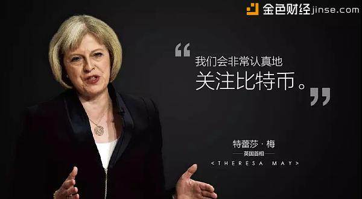

開發快訊
杨宁看好区块链项目消费链CDC 称区块链技术终将改变全人类
2018/1/29 18:28
人人都谈区块链。
但区块链到底是不是泡沫？有多大价值？值不值得投资？乐搏资本创始人、空中网创始人原总裁兼首席技术官、ChianRen创始人杨宁对区块链有着非常激进的看法：
1、区块链就是当年的互联网
2、区块链一定会让少数拥有绝大部分财富的资本家投资人成为历史的产物
3、马克思缺的就是区块链！区块链将带领我们走向共和！
但区块链到底是不是泡沫？有多大价值？值不值得投资？乐搏资本创始人、空中网创始人原总裁兼首席技术官、ChianRen创始人杨宁对区块链有着非常激进的看法：
1、区块链就是当年的互联网
2、区块链一定会让少数拥有绝大部分财富的资本家投资人成为历史的产物
3、马克思缺的就是区块链！区块链将带领我们走向共和！

“区块链这么火，就像是当年的互联网。你能说互联网是泡沫吗？”
杨宁作为很早就接触区块链的“技术投资人”，对区块链项目早就有所预言：区块链热，那是因为区块链是大势所趋。
一夜之间，区块链、数字货币、ICO，成为当下最火的字眼。就连全球达沃斯论坛上，各国领导人都不讨论世界和平了，都在讨论区块链，可见区块链现在已然成为全球热潮。
区块链是什么：去中心化、分布式账本、智能合约……理论上不难理解，但杨宁表示：“很多人对区块链还是没有深入了解。”这是因为现阶段的区块链应用还是一团迷雾，区块链对于很多创业者来说，更像是一个科幻故事，听说过没见过，更想象不到。
区块链早在2009年就应用于比特币。说起当时的经历，杨宁也是感慨万千，表示“错过几个亿，因为当时根本没把比特币当回事。”
他说：“当时的比特币，有人说是骗局，有人说是数字黄金。那时我还在空中网，有人跟我讲比特币，我觉得这是个伪概念。2012年的时候，比特币开始涨，我仍然没有把它当回事……一直到2017年，数字货币开始沸腾了，这时候大家开始谈论的不只是比特币了，大家开始热议一个全新的概念：区块链。于是我开始深入了解并研究区块链，那时我才终于意识到：区块链，它将改变全人类。”
在他看来，区块链是与造纸术、灯泡、蒸汽机、计算机、互联网这些发明比肩，并将改变人类历史的产生。
区块链就像是一个分水岭，因为有了区块链，世界将发生翻天覆地的变化，带给人类不可估量的变革。

仿佛一夜之间，区块链成为所有创投圈茶余饭后的谈资，所有的媒体都开始报道区块链对未来的改变。你也许会想，为什么区块链突然变得来势汹汹？
但杨宁却说：“可以想象这次的浪潮来袭是什么样的，因为这已经是我第二次感受到这种凶猛了。第一次，就是在互联网到来的时候。”
回顾1999年，互联网还是一片贫瘠，那时候还没有淘宝阿里巴巴，腾讯还叫自己OICQ。杨宁就在那时创办了他第一个网站——ChinaRen，一跃成为全国流量第四的大型网站，仅次于搜狐新浪网易。
他说：“你猜那时候我们一天的流量是多少？十几万的流量。因为那时候全国网民就这么多，也就相当于现在一个大V随便发条微博的阅读吧。”
回顾他第一次拿到ChinaRen的投资，是美国高盛银行投了500万美金。
他说：“那时美金兑换人民币的汇率还是1:8，而且是1999年的500万美金，放到现在，就相当于第一轮融资几个亿人民币。也就是说美国高盛银行出资几个亿，投资了一个他也不知道能不能成功的网站。仅仅因为这是一个互联网项目。” “当时高盛银行的一个负责董事看了我的公司介绍，惊讶的说，哇，你才24岁。但当时我还没过生日，准确说我只有23岁。一个有百年悠久历史的老牌保守美国银行，拿了几个亿给一个23岁年轻人做网站。这就是当时大家对互联网投资的热度。”
以铜为鉴,可以正衣冠;以人为鉴,可以明得失;以史为鉴，可以知兴替。
“现在你回头再看历史，你敢说互联网是泡沫吗？互联网给人类生活带来了巨大的改变，它为人类社会创造了无限大的价值，它改变了很多社会形态，互联网怎么可能是泡沫呢？它是伟大的历史颠覆性产物！”杨宁表示，今天我们对区块链的态度，就是当年我们对互联网的态度。
还记得股神巴菲特在互联网兴起之初，就明确表示：“我不会投资任何互联网公司。”完美错过互联网的爆炸式增长。而今他又对媒体声称：“我不看好任何数字货币。”历史总是惊人的相似。
当年说互联网是泡沫、是黑色郁金香，是因为外界看不懂互联网：拼命烧钱、没有盈利模式，马云一直顶着骗子的头衔一步步走到事业的巅峰……而今我们对区块链又是一样的态度，这些耳熟能详的形容词汇又一股脑推到区块链创业的领域。 所以，你还说区块链是泡沫吗？
“我不看好BAT做区块链，因为区块链改变了所有公司形态的公司”
杨宁明确表示：“BAT做区块链是不行的。因为他们的本质是与区块链精神不符的。”
在他看来，从古至今，公司形态，就是一个固定的存在，在东方和西方，都是一样的。
在西方，资本家创办一家公司，服务于资本家的叫做管理团队，服务于管理团队的叫员工。在中国，资本家就是东家，管理团队就是掌柜的，员工就是店小二。
这个结构体系从骨子里来看就是一样的，几千年来从未改变。员工创造价值，但却拿不到全部价值，资本家们压榨员工创造的剩余价值。
现在区块链应用的一定是急被大家所需的，暴利越多，被压迫的人越多，这个行业就越容易被区块链颠覆。“不以解决大众需求为前提的区块链项目，都是耍流氓。”
至于未来区块链应用如何发展，“百花齐放百家争鸣”，但总归都有一点，它是有利于我们底层人民的。
“大势所趋，走向共和。”
这就是杨宁对区块链的看法。